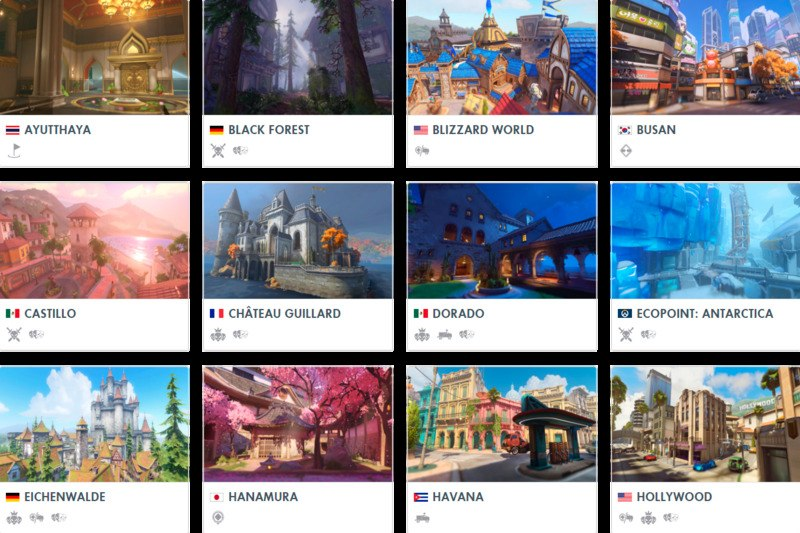

Overwatch® 2: Phân tích chiến lược và các lớp nhân vật
10 commentOverwatch® 2 là một game hành động đồng đội miễn phí, diễn ra trong tương lai lạc quan, nơi mỗi trận đấu là cuộc chiến 5v5 đỉnh cao. Tựa game này là phần tiếp theo của Overwatch, game hành động đồng đội đầu tiên của Blizzard Entertainment, ra mắt vào năm 2016. Trò chơi này đã được kế thừa và mở rộng những gì đã làm nên thành công của Overwatch với nhiều tính năng mới mẻ được ra mắt. Ngoài ra, phiên bản này còn giới thiệu các anh hùng mới, bản đồ mới, chế độ chơi mới và các nhiệm vụ câu chuyện hợp tác khác. Overwatch® 2 là một game trực tuyến, luôn được cập nhật và phát triển. Bạn có thể kết hợp với bạn bè bất kể nền tảng và tham gia vào trải nghiệm PvP được làm mới. Đây là một game hấp dẫn, sáng tạo và đầy màu sắc, mang đến cho bạn những giây phút giải trí và kết nối với cộng đồng người chơi trên toàn thế giới.
Các lớp nhân vật trong game Overwatch 2
Damage
Những nhân vật thuộc lớp Damage sẽ là nguồn gây sát thương chính của đội. Họ có thể di chuyển nhanh, tấn công mạnh và loại bỏ kẻ địch hiệu quả. Tuy nhiên, họ cũng có máu ít và dễ bị hạ gục nếu không được hỗ trợ kịp thời. Một số nhân vật lớp Damage nổi bật trong game là: Widowmaker: Một sát thủ chuyên nghiệp trong Overwatch® 2, sử dụng súng bắn tỉa để xử lý những mục tiêu tầm xa. Cô cũng có thể sử dụng móc để di chuyển nhanh, mìn độc để phòng thủ và kính ngắm đặc biệt để nhìn xuyên tường.
Torbjorn: Nhân vật này là một nhà thiết kế vũ khí tài ba, sử dụng súng bắn đinh và búa để tấn công. Ngoài ra, anh còn có khả năng xây dựng trụ tự động cực kỳ vượt trội. Anh ta cũng có thể ném ra các gói nâng cấp giáp cho đồng đội và tăng năng lượng. Điều này giúp cải thiện đáng kể sức mạnh của bản thân và trụ.
Bastion: Nhân vật này là một con robot có khả năng biến hình, sử dụng súng máy hoặc pháo để bắn liên hoàn. Nó cũng có thể tự sửa chữa và biến thành một con chim để bay lượn trên không trung.
Tank
Những nhân vật thuộc lớp Tank trong Overwatch® 2 sẽ là người đỡ đòn cho đội. Họ có nhiều máu, khả năng chịu đựng cao và có thể tạo ra lá chắn để bảo vệ đồng đội. Tuy nhiên, họ cũng có tốc độ di chuyển chậm và gây sát thương ít hơn so với lớp nhân vật Damage. Một số nhân vật lớp Tank nổi bật là: Reinhardt: Là một hiệp sĩ dũng cảm, sử dụng một chiếc khiên lớn để chắn đạn và một cây búa khổng lồ để đánh gần. Anh ta cũng có thể tấn công từ xa bằng cách ném ra một luồng năng lượng và dùng búa để tạo ra một cú đẩy mạnh.
D.Va: Nhân vật này là cô gái trẻ tuổi sử dụng một bộ giáp cơ khí để chiến đấu. Cô ấy có thể bắn liên tục bằng hai khẩu súng nhỏ và dùng hệ thống phòng thủ để chặn đạn. Cô ấy cũng có thể tăng tốc để đâm vào kẻ địch hoặc bỏ lại bộ giáp để tự kích nổ.
Winston: Đây là một con khỉ thông minh, sử dụng một khẩu súng điện để tạo ra luồng điện và một lá chắn bán cầu để bảo vệ đồng đội. Hắn ta cũng có thể nhảy xa để di chuyển và tăng cường nội tiết. Nội tiết càng cao thì anh ta sẽ càng hung dữ và mạnh mẽ hơn.
Support
Đây là những nhân vật sẽ là người hỗ trợ cho đội. Họ có thể chữa lành, tăng cường hoặc giảm sức mạnh cho đồng đội hoặc kẻ địch. Những nhân vật này có ảnh hưởng lớn đến trận đấu bằng cách kiểm soát trường chiến và thay đổi thế cờ. Họ cũng có khả năng hồi máu tự động khi không bị tấn công. Một số nhân vật lớp Support nổi bật trong Overwatch® 2 là: Mercy: Cô là một bác sĩ thiên tài với vũ khí là một cây gậy Caduceus để chữa lành hoặc tăng sát thương cho đồng đội. Cô ấy cũng có thể bay lượn, hồi sinh và sử dụng súng Caduceus để tấn công. Khi dùng kỹ năng cuối Valkyrie, cô ấy sẽ trở nên nhanh hơn, mạnh hơn và có thể chữa lành cho nhiều đồng đội cùng lúc.
Zenyatta: Là một robot hệ tu sĩ với vũ khí là những quả cầu năng lượng để tấn công và hỗ trợ. Anh ta có thể gắn quả cầu Hòa Bình lên các đồng đội khác để chữa lành và quả cầu Bất Hòa cho kẻ địch để giảm kháng cự. Khi dùng kỹ năng cuối, anh ta sẽ bất tử và tạo ra một vùng chữa lành lớn xung quanh mình.
Kiriko: Đây là nhân vật thuộc xứ sở Nhật Bản, cô sử dụng những tấm Ofuda để chữa lành hoặc gây sát thương. Cô ấy cũng có thể di chuyển nhanh chóng, tạo ra một cái chuông bảo vệ cho đồng đội.
Special
Special là một lớp nhân vật đặc biệt, không thuộc ba nhóm chính Damage, Tank và Support. Những nhân vật này thường sở hữu những kỹ năng độc đáo, có thể linh động thay đổi cách chơi của đội hoặc kẻ địch. Lớp nhân vật này cũng có những điểm mạnh và điểm yếu riêng, cần phải sử dụng một cách khéo léo và hợp lý. Một số nhân vật Special nổi bật trong game Overwatch® 2 là: Echo: Nhân vật này là một robot thông minh, sử dụng những quả bom năng lượng để tấn công từ xa. Cô ấy cũng có thể bay lượn, tạo ra một bản sao của bản thân và dùng kỹ năng cuối Duplicate để sao chép kỹ năng của kẻ địch.
Mei: Cô là một nhà khoa học với vũ khí là súng phun tuyết giúp tạo ra băng giá và làm chậm kẻ địch. Cô ấy cũng có thể tạo ra một bức tường băng, tự bảo vệ bằng băng và dùng kỹ năng cuối Blizzard để gọi một robot tuyết rơi để làm đóng băng kẻ địch.
Sombra: Nhân vật hacker này sử dụng súng máy để tấn công ở tầm gần và trung bình. Cô ấy cũng có thể tàng hình, di chuyển nhanh chóng, hack kẻ địch hoặc vật phẩm.
Chiến lược cần nắm khi chơi Overwatch 2
Đội hình và sự kết hợp giữa các lớp nhân vật Overwatch 2
Một yếu tố quan trọng trong chiến lược là việc lựa chọn đội hình và sự kết hợp giữa các lớp nhân vật. Một đội hình cân bằng sẽ phải có ít nhất một nhân vật thuộc mỗi lớp. Điều này giúp đảm bảo có đủ sát thương, đỡ đòn và hỗ trợ. Tuy nhiên, đội hình cũng có thể thay đổi tùy theo tình huống, mục tiêu và bản đồ. Dưới đây là một số gợi ý về đội hình và sự kết hợp giữa các nhân vật trong Overwatch® 2: Đội hình 2-2-2: Đây là đội hình cơ bản và phổ biến nhất với hai nhân vật Damage, hai nhân vật Tank và hai nhân vật Support. Đội hình này có sự cân bằng về sát thương, đỡ đòn và hỗ trợ, phù hợp với hầu hết các trường hợp.
Đội hình 3-2-1: Đội hình này tập trung vào một lớp nhân vật nào đó với ba nhân vật lớp Damage, hai nhân vật lớp Tank hoặc Support và một nhân vật bất kỳ nào đó. Đội hình này có sự mạnh mẽ về sát thương, nhưng cũng có nhược điểm về khía cạnh khác.
Đội hình 4-1-1: Đây là một đội hình đặc biệt, với bốn nhân vật lớp Damage, một nhân vật lớp Tank và một nhân vật lớp Support. Đội hình này có sự mạnh mẽ về sát thương, nhưng rất yếu về đỡ đòn và hỗ trợ. Người chơi chỉ nên sử dụng đội hình này nếu muốn tấn công nhanh và kết thúc trận đấu sớm.
Phân chia vai trò trong đội hình
Phân chia vai trò và nhiệm vụ trong đội trong game Overwatch® 2 là một yếu tố quan trọng trong chiến lược. Mỗi nhân vật trong trò chơi đóng vai trò và có nhiệm vụ riêng biệt, phụ thuộc vào lớp nhân vật, kỹ năng và vũ khí của họ. Để đạt được sự thành công, người chơi cần hiểu rõ vai trò và nhiệm vụ của mình và hợp tác chặt chẽ với đồng đội để hoàn thành chúng.
Đây cũng là điều quan trọng để tạo ra sự cân bằng và hiệu quả giữa các nhân vật trong trò chơi. Sự phối hợp và hiểu rõ vai trò của từng nhân vật giúp đội hình hài hòa và tận dụng tối đa khả năng của mỗi thành viên. Đồng thời, các nhân vật cũng sẽ có những bước đột phá mạnh mẽ khi giao tranh cùng nhau.
Những yếu tố chiến lược khác trong Overwatch 2
Trong OW2, khả năng chiến lược không chỉ dừng lại ở việc chọn lớp nhân vật và xây dựng đội hình. Còn có những yếu tố khác quan trọng cần được xem xét và áp dụng để đạt được thế trận vững chắc và chiến thắng trong trận đấu. Những yếu tố này chắc chắn sẽ giúp người chơi có những chiến thắng vang dội nếu như hiểu rõ chúng.
Bản đồ và môi trường trong Overwatch® 2
Bản đồ và môi trường là những yếu tố quan trọng trong OW2, vì chúng ảnh hưởng đến cách di chuyển, tấn công và phòng thủ của các đội. Mỗi bản đồ có những đặc điểm riêng như kích thước, hình dạng, địa hình, điểm neo, điểm kiểm soát,… Người chơi cần nắm rõ bản đồ để lựa chọn những anh hùng phù hợp. Từ đó có thể tận dụng những lợi thế địa lý, và tránh những bẫy và nguy hiểm cho đội hình của mình. Một số bản đồ mới trong Overwatch® 2 là Rome, New York, Toronto, Monte Carlo, Rio de Janeiro và Gothenburg.
Môi trường trong game cũng có thể thay đổi theo thời gian, thời tiết và sự kiện. Trong chế độ Push, một robot sẽ đẩy một vật thể qua bản đồ, tạo ra những con đường mới và những khu vực chiến đấu khác nhau. Còn trong bản đồ Rio de Janeiro, có thể có mưa, nắng hoặc lễ hội Carnaval. Người chơi cần tận dụng những chi tiết này đưa ra phương án chiến đấu tốt nhất cho đội hình của mình.
Demo Gameplay
Kết luận
Overwatch® 2 là một trò chơi đa dạng và thú vị, yêu cầu người chơi phải có chiến lược và khả năng phối hợp trong các trận đấu. Với sự cải tiến và mở rộng so với phiên bản trước, trò chơi mang đến một trải nghiệm mới mẻ cho cả những người chơi đã quen thuộc với Overwatch và những người mới.

topgamer June 21, 2024
Một pha xử lý vô lòng đất luôn
Replysuperstar_9xSeptember 11, 2023
Chán chả buồn hiểu, hên là chưa tải
Reply